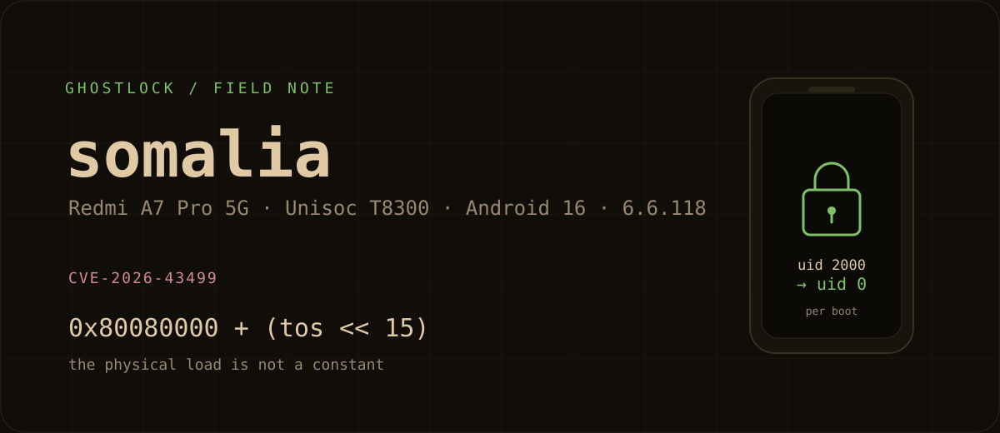
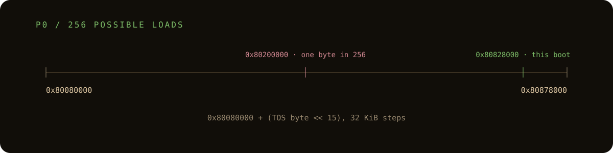
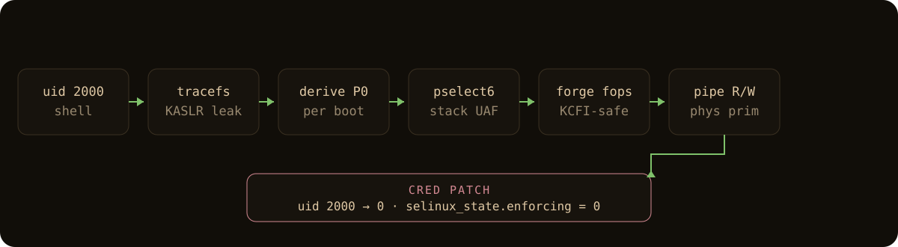

GhostLock on a phone that only boots one slot
A Redmi A7 Pro 5G, a per-boot physical address, and two panics.

This is an account of work on a phone I own, with per-session authorization. Nothing here is a remote exploit or a rooting service. The CVE is public. Root is per boot.
The phone was the problem.
A Redmi A7 Pro 5G, codename somalia. Unisoc T8300, two A78s and six A55s, 4 GB of RAM, Android 16, kernel 6.6.118. Bootloader locked, verified boot green, and slot A already marked unbootable. Slot B was the only way back to Android, and the misc partition had a pending one-shot bootloader command. Every kernel panic was a small argument with the idea of a working phone.
I had a public bug and a working chain. GhostLock, CVE-2026-43499, by NebuSec. A futex priority-inheritance stack use-after-free, public since May, with a hardware-verified 6.6 exploit. The pitch is simple: get the waiter freed, reclaim its stack with a large pselect fd_set, turn the PI rb-tree unlink into an arbitrary write, forge an ashmem fops table, and use the resulting kernel read/write to patch a credential. The public writeup does the hard part. I wanted to know if it would work on this phone.
It didn't, at first.
The loader moved the kernel
The public target has a fixed physical load address. This phone doesn't. I tried 0x80000000. The run reached the CFI open, then missed. I tried 0x80200000. Same thing, different boot. On a normal exploit you'd call that a lost race and run it again. Here it was an address problem wearing a race's clothes.
The loader turned out to be the interesting part. The phone doesn't use a U-Boot environment with a kernel_addr_r. It boots an EDK2 firmware volume, and the kernel loader is SprdBoot.efi. On a normal boot it calls the TrustZone protocol with command 0x50 and a four-byte reply. It reads one byte, shifts it left 15, and stores that in PCD token 31. The kernel read destination and the entry PC are both 0x80080000 plus that value.
So the physical load is 0x80080000 + (byte << 15). Thirty-two kilobyte steps above a base that isn't 2 MiB aligned. The old fixed values weren't close. One was below the loader base. The other was right for exactly one byte out of 256. I'd been aiming the write at the wrong physical page and calling it bad luck.

The leak was already there
The way out was sitting in the leak I already had. The same byte seeds /chosen/kaslr-seed. The arm64 KASLR code takes the low 21 bits of the physical placement into the virtual slide, and the source says so plainly: the offset modulo MIN_KIMG_ALIGN comes from physical placement, not from the seed. If you have the virtual slide, you have the low bits of the physical load. The high two bits of the byte show up in bits 21 and 22 of the slide. That's the whole trick.
I wrote it down as arithmetic because the prose version is easy to nod along to and get wrong:
slide = leaked_text - 0xffffffc080000000
byte = (((slide >> 21) & 3) << 6) |
((((slide & 0x1fffff) - 0x80000) & 0x1fffff) >> 15)
P0 = 0x80080000 + (byte << 15)The first derived value was 0x80828000. I built the payload with it, ran it once, and watched the capture line land on the first pselect attempt. The root child reported uid 0, full caps, and SELinux 1 -> 0. The helper exited after 56 seconds. No panic. I had a uid-0 credential in a process that then exited, which is a strange thing to call root, but that's what the chain gives you.
The phone was still a phone. A fresh adb shell was uid 2000. To keep a root process around, I started a small abstract-socket server from the root child. It survived the payload and answered shell requests as uid 0 for the rest of the boot. That was enough to read /proc/iomem, the uboot_log partition, and the root-only parts of the device. The pending bootloader command in misc and the dead slot A made me treat every reboot as a recovery event, not a test.

Two panics
The first real casualty was debugfs. I mounted it, read clk_summary and regulator_summary, and got a synchronous external abort and a reboot. The mount was cleared by the reset. The phone booted Android on slot B, so it wasn't bricked, but root, Permissive, and P0 were gone. That one is on me. Those summaries are off-limits on this unit now.
The second was stranger. I added a private Termux socket for su and sudo, alongside the abstract ADB path. It passed smoke tests: su -c id returned uid 0, the Termux app UID was denied on the abstract socket, host forwarding still worked. Then, during cleanup, a binder thread panicked in module_put through __fput. The file's f_op->owner was a corrupted, non-kernel pointer. The root server was not the crashing task, so I can't pin it on one line with confidence. The best suspect is close_inherited_fds(): the server was closing every inherited exploit fd, including one that could still carry a forged fops table. I changed it to close only pipe and regular fds. Re-rooted on the new boot, tested the private su and the abstract ADB path. Nothing has panicked in the short window since. I'm still watching it.
What is actually reusable
That's where the project is. Three boots with a uid-0 credential patch, two fixed-P0 misses, two panics, and a fix that is under observation. No persistent root, no boot image change, no package install, no magic. The phone is locked and verified, and the whole thing dies at reboot.
The part I think is worth sharing is not "I rooted my phone." It's the loader behavior and the P0 derivation, plus the failure notes. If you're porting a 6.6 chain to a Unisoc device, the physical load is not a constant, and a silent CFI miss is a terrible way to find that out.
The code and the longer writeup are here:
The repo also has the boot chain notes, offsets, the accepted pselect patch, QEMU notes, both incident records, and a sanitized evidence trail. It is deliberately not a turnkey payload. If you find an error, especially in the loader disassembly or the P0 arithmetic, I'd like to hear it.
CVE-2026-43499 is NebuSec's bug. The public writeup is the place to start. This is one device port on top of it.
su claim. The repo's STATUS.md is the source of truth.